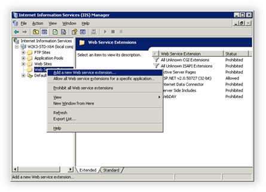
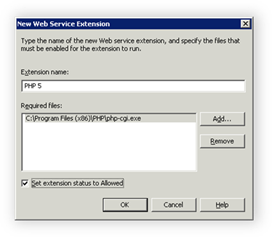
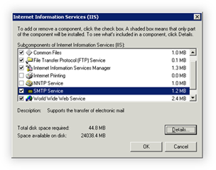
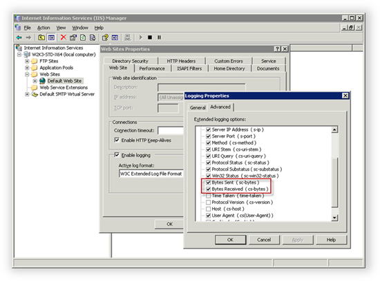
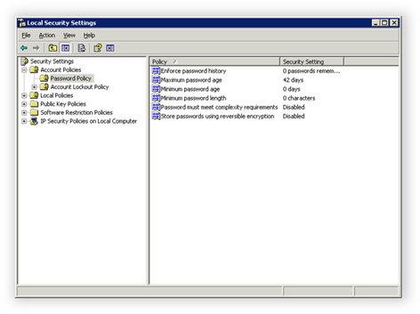

Configuring Windows 2003 Web Server
Translations:
Enabling PHP Extensions in IIS
After you install PHP using Web PI, you must enable PHP extension in IIS. In IIS Manager, right-click Web Service Extensions in the left navigation tree and then select Add new Web service extension.

Specify "PHP 5" as the extension name, select the path to the php-cgi.exe file, and then select Set extension status to Allowed.

Click OK.
Installing FTP and SMTP Services in IIS
In order to use the FTP client for working with files and folders on the server, you must install the FTP Service that is part of IIS 6. To send notifications from WebsitePanel, you also must install the SMTP service.
In the Windows Control Panel, select Add/Remove Programs and then click Add/Remove Windows Components. Click Details for the Application Server item, and then click Details again for the Internet Information Services (IIS) item. Select the File Transfer Protocol (FTP) Service and SMTP Service items and then click OK.

Configuring IIS Logging
In order to collect and analyze website traffic in WebsitePanel, you must enable logging in IIS. By default, logging in the correct format is already enabled, but some important options are not enabled.
In IIS Manager, right-click the Web Sites node and then select Properties. Click Properties in the Enable logging section and then click the Advanced tab. Select the Bytes sent and Bytes received options.

Click OK.
Disabling Password Complexity Policy
To disable password complexity policy, open the Local Security Settings manager (Start > Administrative Tools), expand Account Policies, and then expand Password Policy. Set the Set Password must meet complexity requirements policy to Disabled.
